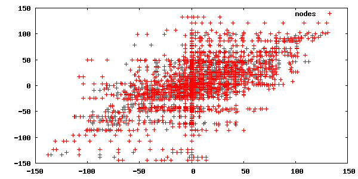
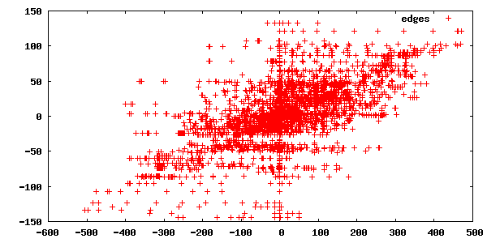

I can't believe I won.
I can't believe I won decisively at all.
I've never won any programming contest before (although I did place in 3rd in the Mario AI contest but there were only about 10 entrants). Whenever I badly lose at an ICFP contest I'm always anxious to see the post mortems of the people who did better than I did, and I imagine a lot of people are curious as to how I won, exactly. So here's my post-mortem.
Before we get into it, note that all of my code is on github here. The commit logs might be a mildly entertaining read.
The first thing I did was attempt to ignore this contest as long as possible, because month-long programming contests get me into a lot of trouble at work and at home. The contest was the Tron light cycle game. I've played variants of this game ever since I got one of these when I was in 1st grade or so. The most fun variant was my uncle's copy of Snafu for the Intellivision which we played at my Grandma's house all day long. I've long wondered how to write a bot for it, because the AI on these usually isn't very smart.
But I finally gave in on the 9th, downloaded a starter pack, and attempted to make a simple semi-decent wall-hugging bot. I quickly discovered a simple useful heuristic: the best rule for efficiently filling space is to always choose the move that removes the least number of edges from the graph. In other words, go towards the space with the most walls for neighbors. But! Avoid cut vertices (AKA articulation points), and if you have to enter a cut vertex, then always choose the largest space left over. At this stage I wasn't actually calculating articulation points; I just checked the 3x3 neighborhood of the square and made a lookup table of neighbor configurations that might be articulation points based on the 3x3 neighborhood. This is what the potential_articulation function does in my code, and artictbl.h is the lookup table.
I was, however, computing the connected components of the map. This is a simple two-pass O(NM) algorithm for N squares in the map and M different components. For each non-wall square in the map, traversed in raster order, merge it with the component above it (if there is no wall above) and do the same to its left (if there is no wall to the left). If it connects two components, renumber based on the lowest index, maintaining an equivalence lookup table on the side (equivalence lookups are O(M) but really just linear scans of a tiny vector). Then scan again and fixup the equivalences. This is what the Components structure is for; it has this algorithm and simple sometimes-O(1), sometimes-O(NM) update functions based on potential_articulation above.
I left it at that for the rest of the week and then Friday the 12th I was inspired by various posts on the official contest forum to implement minimax with alpha-beta pruning, which would let it look several moves ahead before deciding what to do. The problem with this approach is that you have to have some way of estimating who is going to win and by how much, given any possible configuration of walls and players. If the players are separated by a wall, then the one with the most open squares, for the most part, wins. If they aren't separated, then we need to somehow guess who will be able to wall in whom into a smaller space. To do that, I did what everyone else in the contest who had read the forums was doing at this point: I used the so-called Voronoi heuristic.
The "Voronoi heuristic" works like this: for each spot on the map, find whether player 1 can reach it before player 2 does or vice versa. This creates a Voronoi diagram with just two points which sort of winds around all the obstacles. The best way to explain it is to show what it looks like during a game:
The light red area are all squares the red player can reach before the blue player can. Similarly for the light blue squares. If they're white, they're equidistant. The heuristic value I used initially, and many other contestants used, was to add up the number of squares on each side and subtract.
Once the red player cuts the blue one off, they are no longer in the same connected component and then gameplay evaluation switches to "endgame" or "survival" mode, where you just try to outlast your opponent. After this point, the minimax value was 1000*(size of player 1's connected component - size of player 2's connected component). The factor of 1000 was just to reward certainty in an endgame vs. heuristic positional value. Note that this was only used to predict an endgame situation. After the bot actually reached the endgame, it simply used the greedy wall-following heuristic described above, and it performed admirably for doing no searching at all.
I next noticed that my bot would make some fairly random moves in the early game, effectively cluttering its own space. So I took a cue from my flood filling heuristic and added a territory bonus for the number of open neighbors each square in the territory had (effectively counting each "edge" twice). This led to automatic wall-hugging behavior when all else was equal.
After fixing a lot of bugs, and finally realizing that when time runs out on a minimax search, you have to throw away the ply you're in the middle of searching and use the best move from the previous ply, I had an extremely average bot. Due to the arbitrariness of the ranking up until the last week in the contest, it briefly hit the #1 spot and then settled to a random spot on the first page. It was pretty hard to tell whether it was any good, but I was losing some games, so I figured it must not be.
The next realization was that my bot was doing a lot of stupid things in the endgame. So the next improvement was to do an iteratively-deepened search in the endgame. I exhaustively tried all possible moves, and at the bottom of the search tree, ran my greedy heuristic to completion. Whichever move sequence "primed" the greedy evaluator the best wins. This works great on the smallish official contest maps. It works terribly on very large random maps currently in rotation on dhartmei's server, but I didn't realize that until after the contest.
I was out of ideas for a while and spent some time optimizing (I used Dijkstra's to do the Voronoi computation and I sped it up by using what I call a radix priority queue which is just a vector of stacks... see dijkstra). But it had been bothering me that my edge count/node count Voronoi heuristic was pretty arbitrary, and wondered if I could do any kind of inference to discover better ones.
Well, hundreds of thousands of games had been played on the contest server by this point, and they are extremely easy to download (the contest site's game viewer does an AJAX request to get some simple-to-parse data for the game), so I figured I'd try to do some data mining. I wrote a quick perl hack to grab games from the site and output them in a format that Tron bots recognize. Then I copied-and-pasted my code wholesale into examine.cc and marked it up so it would read in a game back-to-front, find the point at which the players enter separate components, guess what the optimal number of moves they could have made from that point forward, and then use the existing territory evaluation code on every turn before that and dump out some statistics. The goal was to discover a model that would predict, given these territory statistics, what the difference in squares will eventually be in the endgame.
I started with an extremely simple linear model (and never really changed it afterwards): the predicted difference in endgame moves is K1 (N1 - N2) + K2 (E1 - E2) where Ni is the number of nodes in player i's territory and Ei is the number of edges (double-counted actually).
Now, this model is pretty far from absolutely great, and only a little predictive. This is what the raw data looks like after analyzing 11691 of the games the top-100 players (at the time) had played:


That's the difference of nodes/edges on the x-axis and the difference of endgame moves on the y-axis. So both nodes and edges by the Voronoi metric are, of course, correlated. I did a linear regression to find approximate values for K1 (currently 0.055) and K2 (0.194) and multiplied through by 1000 to keep everything integers.
This definitely improved play in my own testing (I kept 14 different versions of my bot throughout the contest so I could compare them. Interestingly, no bot ever totally shut out a previous bot on all maps in my tests; every bot has a weakness). Once I had that, I was doing very well in the leaderboard rankings.
Next I noticed dmj's "mostly useless" idea on the official contest forums: Pretend the game is played on a checkerboard. Each player can only move from red to black and vice versa. Therefore, if a given space has a lot more "red" squares than "black" squares, the surplus "red" squares will necessarily be wasted. I switched out all my space counting code to count up red and black spaces, and found a tighter upper bound on the amount of space an ideal bot could fill. This let my endgame code stop searching when it had found a solution matching the upper bound, and gave slightly more realistic territory evaluations.
I had already started to think about what came to be called "chamber trees", as pointed out by iouri in the same thread: find all the articulation points on the map and construct a graph of connected spaces. I implemented the standard O(N) algorithm for finding articulation points (calc_articulations, taken from this presentation [pdf]). I messed around with this idea but nothing came to fruition until just before the deadline.
At around this point, I got extremely sick and spent all day Wednesday in bed. That day, dhartmei's server showed up, which was a huge blessing. I ran my bot on there in the background all Thursday long, and it did very well on there too, which was a very reassuring thing. But it was still losing a lot of games.
So finally, after failing to get to sleep Thursday night thanks to coughing and being unable to breathe through my nose, I was struck by an idea at around 3am. This, it turns out, was probably the contest-winning idea, though I'm not so sure that nobody else implemented it. Anyway, take a look at this game (a1k0n_ v. ecv257):
(The little circles are the articulation points found by the algorithm above.) By the so-called Voronoi heuristic, blue has a lot more space than red does. But red is ultimately going to win this game, because the only space that blue controls that matters here is the space that borders red. Blue can choose to cut off that space and fill in the two chambers on the right, or it can choose to move into the left chamber and take its claim on what I call the "battlefront": the border between blue space and red space.
I had long ago come to the realization that a better evaluation heuristic will always beat deeper minimax searches, because a deep minimax search using a flawed evaluation heuristic is self-deluded about what its opponent is actually going to do, and will favor moves that lose to moves that win, simply because it can't tell the difference. Anything you can do to make your evaluation function smarter will result in improved play in the long run.
In this case, I decided to make my evaluation function aware of the above condition: if the player is not in the chamber containing the "battlefront", then make the choice I outlined above. More formally, the new heuristic value is the same as the old one, but Ni and Ei are counted differently. First, find all cut vertices assuming the opponent's territory by the Voronoi metric is disconnected. Start a depth-first search in the player's "chamber", count Ni and Ei within the chamber, and list all the neighboring cut vertices but do not traverse them (_explore_space). Now, explore space recursively for each adjacent cut vertex. If child j's space is not a battlefront, then our potential value is the sum of the current chamber size and child j's value. Otherwise, it is a bottlefront, and we ignore the current chamber's size but add only the number of steps it takes to enter the child chamber (I don't have a good formal reason for this, it just seemed intuitively right). After computing this potential value for each child, we return the maximum of them as the current chamber's value.
Therefore the new code will handle the mutual exclusion of battlefront chambers and other chambers, and force it to choose to either ignore the upper left chamber or ignore the two chambers on the right.
The idea was extremely roughly-formed when I implemented it (see max_articulated_space), but it did improve play markedly after throwing it together (again, it didn't shut out the previous version of my bot totally but it won 12-1 IIRC).
I also had the idea of negatively counting the space we ignore on a battlefront, as we are effectively handing that space to our opponent. Never got a chance to try it, though. Might be a nice improvement.
So that was it. I submitted that Friday around noon, and was subsequently afraid to touch it. (My wife and son and I left for Wisconsin Dells right afterwards, where I couldn't help but check rankings on my cellphone and keep up on the forums the whole time, which didn't go over well) The bot is still running on dhartmei's server, and still loses many games as a result of miscounting the opponent's space in the endgame, since my endgame evaluation wasn't very good. But it was good enough for the contest.